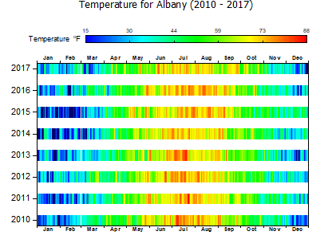

Heatmap aufteilen
Heatmap-Labels
- 
Datenanforderungen
- Arbeitsblatt: Wählen Sie XY-Spalten oder XYZ-Spalten (voll oder Teilbereich) oder eine virtuelle Matrix aus.
oder
- Matrix: Eine Matrix von Z-Werten
Diagramm erstellen
- Aktivieren Sie das Matrixblatt oder wählen Sie die gewünschten Daten im Arbeitsblatt aus.
- Wählen Sie im Menü .
- Wenn Sie von einer virtuellen Matrix aus zeichnen, legen Sie im aufgerufenen Dialog plotvm die Auswahlliste Y-Werte in, die Quelle der Spaltenbeschriftung (falls benötigt) und X-Werte in fest. Bestimmen Sie, welche Achsentitel Sie haben möchten, und klicken Sie auf OK.
Vorlage
SplitHeatMap.OTPU
Hinweise
- Dieses Diagramm wird am einfachsten aus einer virtuellen Matrix erstellt. Im Dialog plotvm können Sie eine Spaltenbeschriftungszeile festlegen, die zum Beschriften von jedem horizontalen "Balken" in der Zeichnung verwendet wird.
- Die Daten in der X-Spalte müssen monotonisch sein.
- Um die Abstände zwischen den "Balken" zu modifizieren, aktivieren Sie das Diagramm und wählen Sie Format: Zeichnung. Klicken Sie auf die Registerkarte Abstände und stellen Sie den Schieber Lücke zwischen Zellen in Y-Richtung ein.
- Um zu sehen, wie die oben dargestellte Zeichnung erstellt wurde, drüclen Sie F11, um das Lernzentrum zu öffnen, und suchen Sie nach "Heatmap".
- Dieser Diagrammtyp teilt sich die Bedienelemente mit der Standard-Heatmap und mit der Heatmap mit Beschriftungen.